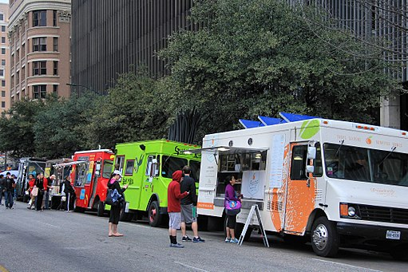

Vendor for App Users
Find the best street food around with Vendor.
Finding local street vendors and food trucks has never been easier
 Street vendors and food trucks are everywhere but finding your favorite truck or one serving your favorite foods can be difficult. That’s why us at the Vendor team are working very hard to bring the Vendor app to you. Vendor is fast and simple to use! Simply open the app, search for your favorite food and Voilà, all the vendor in your area serving that food will be shown to you in either a list or map format. From here you can view vendor profiles and schedules, get directions to your favorite vendors, and star vendors you want to keep track of.Skip the line with in-app ordering (Future Feature)
 A highly requested future feature we are working on is in-app ordering. With in-app ordering you will easily be able to order from your favorite street vendors and food trucks ahead of time and skip that pesky line. In-app ordering will allow you to easily order and pay for your food with either Apple Pay or cash when you go to pick up your order, thes epayment options make it easy to order from your favorite vendors even if you don't carry cash.
A highly requested future feature we are working on is in-app ordering. With in-app ordering you will easily be able to order from your favorite street vendors and food trucks ahead of time and skip that pesky line. In-app ordering will allow you to easily order and pay for your food with either Apple Pay or cash when you go to pick up your order, thes epayment options make it easy to order from your favorite vendors even if you don't carry cash.